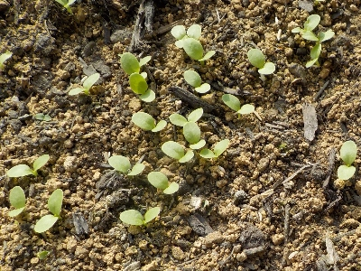
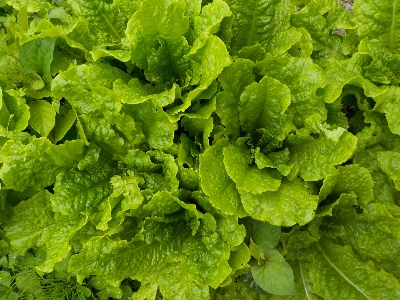

更新日 : 2026/03/28

こんなに沢山発芽するんだったら地植えでよかったです。
育苗箱で移植するなんて無駄な作業でした。
まだ採取した種は沢山あるので、またどこかに種をまこうと思います。
更新日 : 2026/06/08

近頃毎日サンチュを沢山食べています。
家の緑色の野菜が少ない時期なので、なんとか食べれるかなってくらいの多さです。
育てるのに手間がかかっていないので、毎年タネを蒔いて大量に食べるのは有りですね。
レタス系は虫があまり付かないからいいですよね。ナメクジが敵ですね。
【おいしいものを食べよう。】【たくさん寝よう。】
【ソロ活をしよう!】【季節感のあることをしよう。】【動画視聴はほどほどに。】【当サイトの全てのコンテンツは無断転載禁止です。】